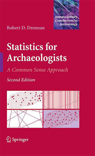

Statisics for Archaeologists…with R!
Preface
These notes, intended to serve as a guide to implementing Drennan’s Statistics for Archaeologists (Drennan (2009)) in R, are built upon David Carlson’s R Companion to Statistics for Archaeologists. I have written the text and rewritten most of the code, but without the foundation - and inspiration - that he provided this document would not exist.

They primarily use Base R, with additional packages generally noted when used. This is not to say that these are the only - or even the most efficient - ways of carrying out these operations! However, they are the easiest to follow when learning both statistics and R because they are (relatively) transparent; largely for this reason you won’t find much of the so-called tidyverse here, though it is indubitably a useful and often efficient way to use R. One major exception is the dplyr package (Wickham et al. (2018)), which I have come to rely on for efficient data wrangling (see my intro to Data Wrangling for Archaeology) and occasionally use here. A few other packages are added for select chapters; I have tried to confine this to the beginning of each chapter so that you can easily see which packages are being loaded.
Please note that you will not find much explanatory text about the concepts involved in each chapter here either - Drennan provides that. Rather, this text focuses on how to implement in R the kinds of analysis and visualization of archaeological data that Drennan describes.
For a brief introduction to installing and managing R, see the first few sections (‘Home’ / ‘Before We Start’ / ‘Intro to R’) of this Data Carpentry lesson Data Analysis and Visualization in R for Archaeologists (warning: contains tidyverse). I have adapted much of the latter part (‘Starting with Data’ / ‘Manipulating Data’ / ‘Visualizing Data’) to our purposes; that revised lesson can be found here (warning: still contains tidyverse…but not uncritically). For a collection of R-for-archaeology resources, see here.